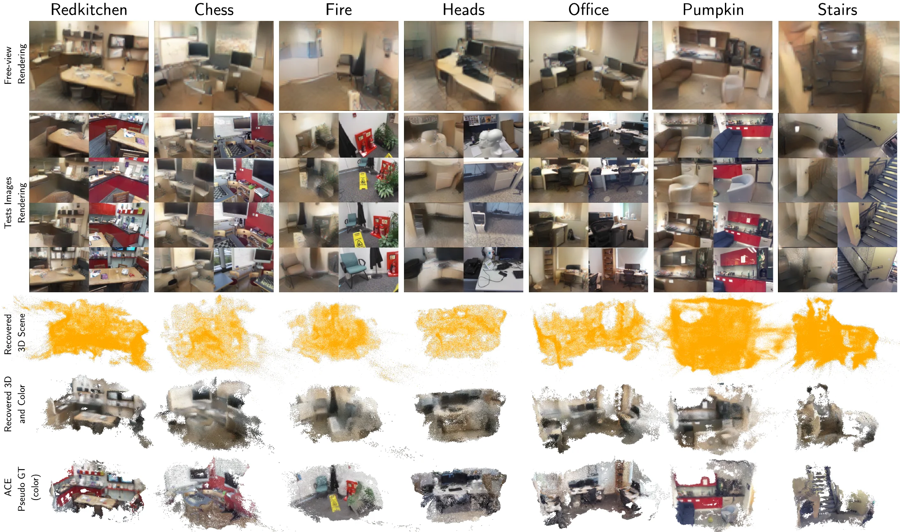

ECCV 2026
Seeing Through the Weights: Privacy Leakage in Scene Coordinate Regression
Stony Brook University · Ghent University Global Campus · George Mason University Korea · SUNY Korea
* Equal contribution
Demo
Reconstructing Private 3D Scenes from SCR Weights
Scene Coordinate Regression models are often treated as compact and privacy-preserving scene representations. We show that an attacker can query the model with unrelated proxy images and recover both 3D geometry and coarse appearance from the training environment.
Abstract
SCR Representations Are Not Privacy-Preserving by Design
Scene Coordinate Regression (SCR) methods are increasingly adopted for visual localization. In these approaches, the scene is implicitly encoded within a neural network that regresses a 3D world coordinate for each image pixel. Because the scene is represented only through the network parameters and not stored explicitly as images or maps, such methods are often assumed to be privacy-preserving. In this work, we show that this assumption is incorrect in practice.
We introduce a query-based attack that reconstructs the 3D geometry of the training environment from an SCR model under different levels of model access. We repeatedly query the model with batches of proxy images unrelated to the target scene to obtain dense pixel-wise 3D coordinates. Reliable points are identified through their stability under small input perturbations and can be further refined in a white-box setting. These stable points are accumulated across independent query batches to recover scene geometry. From the recovered 3D representation, we also invert network features to synthesize images from arbitrary viewpoints, revealing additional appearance information.
Experiments on indoor and outdoor datasets demonstrate that substantial portions of training environments can be reconstructed with high geometric fidelity. Beyond geometry, we recover approximate color appearance, exposing recognizable layout and potentially sensitive scene elements.
Method
Query, Refine, Filter, Accumulate, and Invert

Qualitative Comparison
Recovered 3D and Appearance Across 7-Scenes

Videos
Scene-wise Reconstruction Progression
Red Kitchen
Chess
Pumpkin
Fire
Heads
Citation
BibTeX
@inproceedings{nasypanyi2026seeing,
title={Seeing Through the Weights: Privacy Leakage in Scene Coordinate Regression},
author={Nasypanyi, Oleksii and Cho, Jaemin and Ozbulak, Utku and Kang, Byungkon and Rameau, Francois},
booktitle={European Conference on Computer Vision (ECCV)},
year={2026}
}